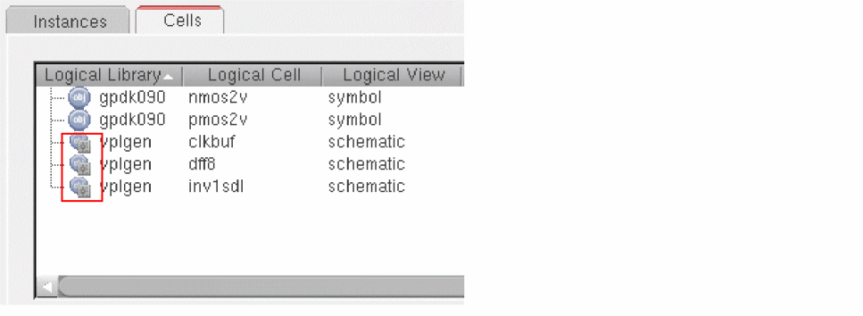
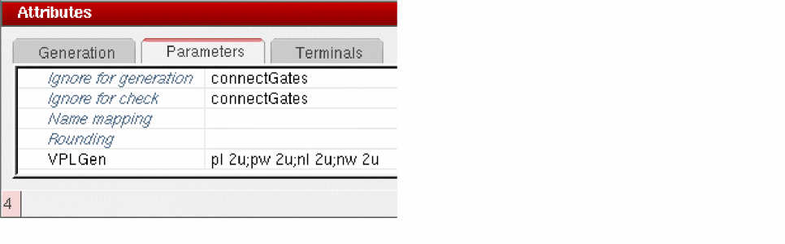
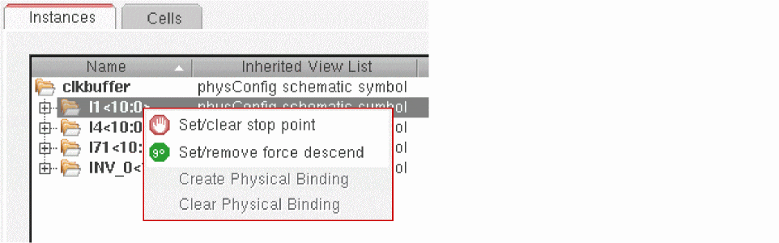
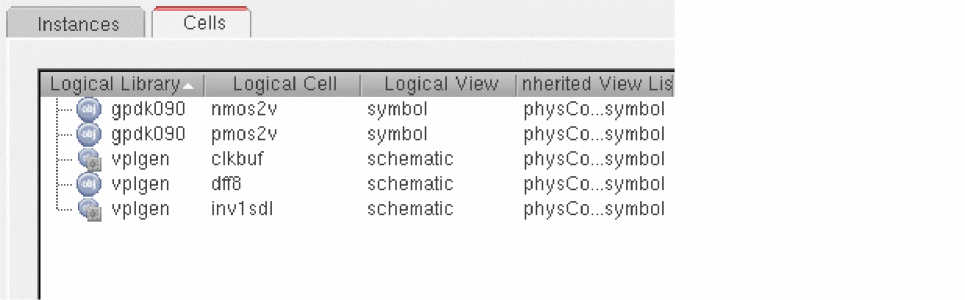

Basic VPLGen Flow
The section outlines the basic VPLGen flow and provides links to more information.
- Decide which schematic cells are to be implemented as VPLGens.
-
Use Configure Physical Hierarchy to specify that the schematic cells are to be implemented as VPLGens.
You can also prevent specific instances from being generated as a VPLGen, or remove the VPLGen designation from the schematic cell altogether. See Overriding the Physical Binding for a Specific Instance and Removing the VPLGen Designation from a Schematic Cell. - Use Generate Selected From Source to generate an instance of the schematic cell as a VPLGen Pcell instance in the layout view, edit the VPLGen in Layout XL to design the layout you require, and save it to create a VPLGen core layout.
- (Optional) Set the VPLGen core layout as your preferred default layout to be re-used each time you generate a new VPLGen Pcell instance for that schematic cell.
- Although optional, this step is recommended, so that you re-use as much as possible of the core layout (placement, routing, guard-rings, and so on) the next time you generate that cell in the layout.
- Use the standard Layout XL commands to generate and edit VPLGen Pcell instances in your layout.
- Use the standard Layout XL commands to update existing VPLGen Pcell instances in your layout.
Related Topics
Generating VPLGen Pcell Instances
Updating VPLGen Pcell Instances
Setting Cells as VPLGens
You use the Configure Physical Hierarchy window to mark a schematic cell as a VPLGen. This specifies that predefined layouts will be generated automatically for variants of this schematic cell. See
- From the layout window, click Launch – Configure Physical Hierarchy and ensure you are in the Hierarchy Configuration mode.
- Click the Cells tab and select the cells that you want to implement as VPLGens.
-
Click the right mouse button and select Create/remove VPLGen.
The selected cells are marked as VPLGens and the icon updated to denote this.

For performance reasons, CPH does not search on disk for VPLGen variants of the same cell that might exist in other designs. If this cell has a VPLGen definition in a different library, you will still be able to create it again here.
You can use the LAM file to designate the schematic cell as VPLGen and map it to the VPLGen variant you require.
-
Click the Parameters tab in the Attributes pane and type in the list of parameters in the VPLGen field.
List the parameter names and default values, each separated by a semicolon; for example pl 2u;pw 2u;nl 2u;nw 2u.
Although shown here, you do not need to specify default values for CDF parameters; the default value set for each CDF parameter in the schematic is used automatically. You can also populate this field automatically using the vplGenParams environment variable. If you do not specify any parameters or set this environment variable, no VPLGens will be created. -
Click File – Save in the Configure Physical Hierarchy window.
The specified schematic cells will be generated as VPLGen Pcell instances in the layout view.
Overriding the Physical Binding for a Specific Instance
If you have a specific schematic instance that you do not want to be instantiated as a VPLGen, you can override the physical binding for that instance in the Instances tab.
- Click the Instances tab in the Configure Physical Hierarchy window.
-
Right-click the instance you want to override and choose Set/remove force descend.
The selected instance will be generated as normal in the layout, even though it is still set as a VPLGen at the cell level.
Removing the VPLGen Designation from a Schematic Cell
You can also remove the VPLGen designation completely for a schematic cell.
- In the Cells tab, select the VPLGen you want to remove.
-
Click the right mouse button and select Create/remove VPLGen.
The selected VPLGen is removed and the icon updated to reflect its status.
Instances of that cell will be generated as normal in the layout view.
Related Topics
Hierarchy Configuration Mode in CPH
Return to top